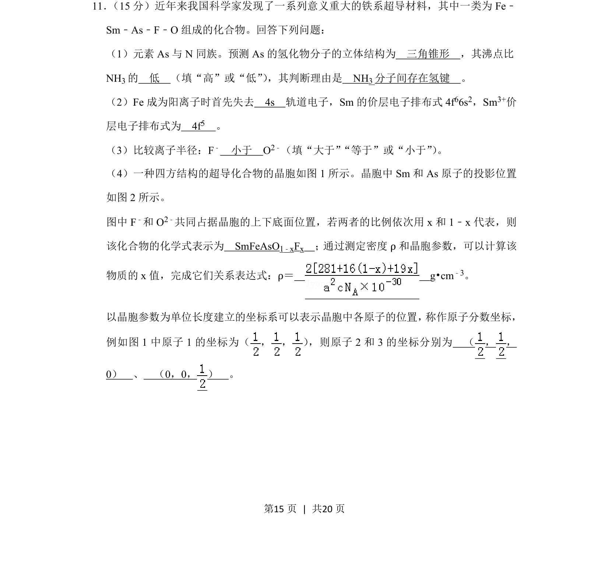
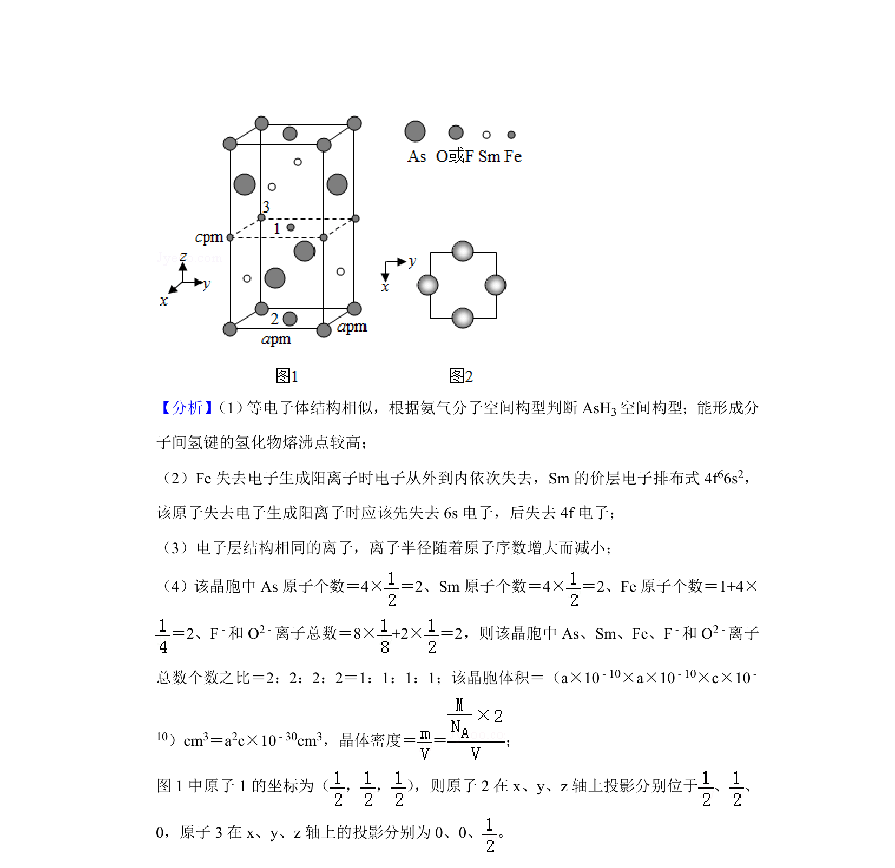
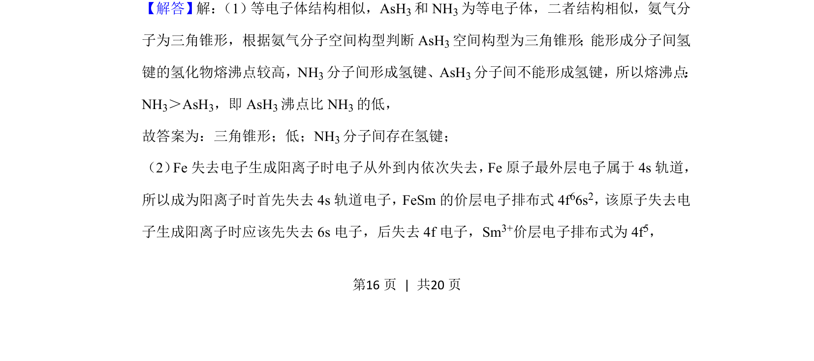
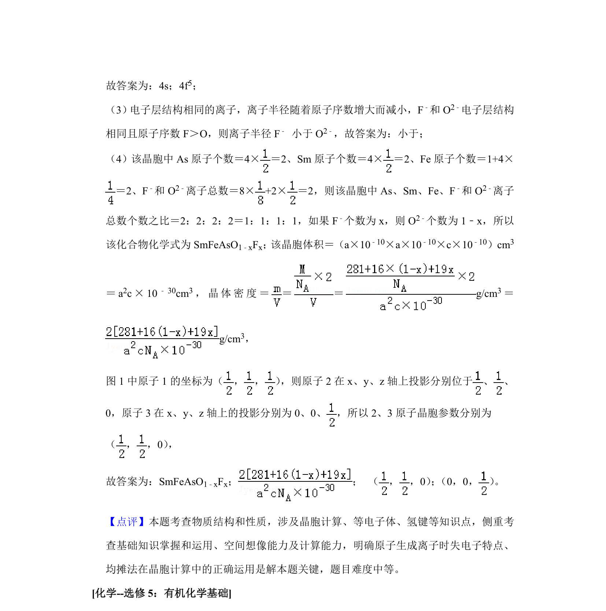

考点：物质结构 晶胞参数 密度公式 坐标表达
物质结构
晶胞参数
密度公式
坐标表达


该题考查铁系超导材料的结构、电子排布、化学式推断及晶胞密度计算。


📄 原 PDF 第 15 页：素材/真题/吉林/2008-2024·（吉林）化学高考真题/2019年高考化学试卷（新课标Ⅱ）（解析卷）.pdf
素材/真题/吉林/2008-2024·（吉林）化学高考真题/2019年高考化学试卷（新课标Ⅱ）（解析卷）.pdf